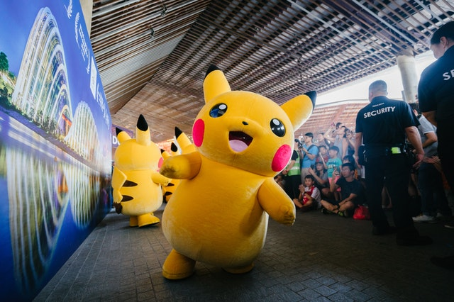
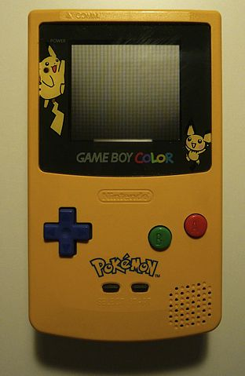

Yosemite National Park is located in central California. It is a World Heritage Site and has over 4 million visitors every year. Yosemite has beautiful granite cliffs, waterfalls, sequoia groves, hiking trails, and biological diversity. One of its most popular attractions is Half Dome, which people can hike and climb up.

Photo by David Iliff on Wikimedia Commons. License: CC BY-SA 3.0

Photo by Nicholas Dench from FreeImages

Photo by Benjamin Thorn from FreeImages
Photo by Joe Carey from FreeImages
Gymnastics involves balance, strength, flexibility, and coordination. Events for women include the vault, uneven bars, balance beam, and floor. Events for men are vault, parallel bars, floor, pummel horse, and still rings.
Image by Rolf Dober from German Wikipedia
Pikachu is a yellow, furry, electric Pokemon. Pikachu is the mascot of the Pokemon franchise and is also one of the major mascots for Nintendo. Pikachu can be seen all over the world, appearing in original Pokemon video games and trading cards, on clothing, as stuffed animals, and even as life size costumes.
Photo by mentatdgt from Pexels
Photo by Xabi Vazquez from Wikimedia
Prep time: 35 minutes | Cook Time: 25 minutes | Serves: 12
3 and 2/3 cups (420g) cake flour
1 teaspoon salt
1 teaspoon baking powder
1 and 1/2 cups (345g) unsalted butter
2 cups (400g) sugar
3 eggs
1 tablespoon vanilla extract
Photo by Rexness from flickr